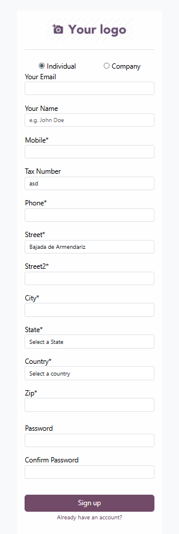
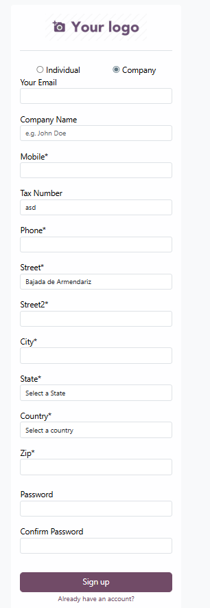

Odoo Module: MBS Signup Address Fields


How to Setup Google Place integration on Street Field
1. Create a Google Maps API Key
- Go to Google Cloud Console.
- Create a new project (or select an existing one).
- Enable the following APIs:
- Maps JavaScript API
- Places API
- Create an API Key under APIs & Services → Credentials → Create Credentials → API Key.
- Optionally, restrict the key to your website domain(s) and these APIs.
2. Add the API Key to Odoo Settings
This module uses res.config.settings to store your API key. Follow these steps:
- Go to Settings → General Settings (or the menu you created for the module).
- Locate the field
Google Maps API Key.
- Paste your API key and save.
Note: Make sure the key is active and has the correct API permissions. Without it, the street autocomplete in the signup form will not work.
3. Test the Signup Form
- Go to your signup page.
- Start typing in the street field — Google autocomplete suggestions should appear.
- Ensure phone formatting and company type logic still work.
5. Troubleshooting
- If autocomplete does not appear, check the console for errors.
- Verify that your API key is correctly saved in
Settings → General Settings → Google Place Api.
- Make sure the Maps JavaScript API and Places API are enabled in Google Cloud.